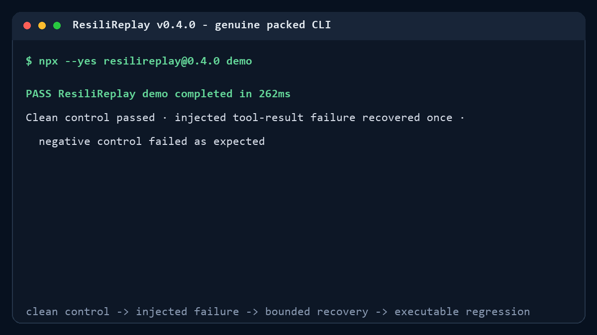

MCP INSPECTOR
Explore and debug
Interactively inspect server capabilities, tools, schemas, and behavior.
MCP recovery testing - v0.4.0 Adopt
Turn an MCP server into a reviewed deterministic recovery test suite and GitHub Action in under five minutes.
Value in one command
Node.js 22 or 24. No config, account, external server, provider, or LLM.
npx --yes resilireplay@0.4.0 demoGenuine packed-package capture
The final bundled CLI produced this output. The demo verifies a clean control, one injected tool-result error, one bounded retry, an expected negative control, and the generated regression.

Different jobs, clear boundary
MCP INSPECTOR
Interactively inspect server capabilities, tools, schemas, and behavior.
GENERAL EVALS
Measure output quality, security properties, or model comparisons.
RESILIREPLAY
Inject deterministic failure, preserve causal recovery evidence, and run the regression in CI.
These functions overlap at the edges; no endorsement or superiority claim is implied.
Five-minute path
npx --yes resilireplay@0.4.0 adopt --config ./mcp.json --dry-run starts
no process, connection, tool call, or project write.
Inspect the command and arguments or HTTP origin. Credential values remain redacted.
Annotations are untrusted hints. Confirm the exact tool, arguments, and suitability for one duplicate attempt.
One clean control, one recovered tool error, and timeout plus safety negative controls.
Add the campaign, metadata-only evidence, executable regression, baseline instructions, and pinned Action workflow.
Fail-closed boundaries
ResiliReplay is defensive testing software. It is not an OS sandbox, DLP product, or security certification.
Default discovery checks three documented repository-local paths and rejects escaping symlinks.
--yes cannot authorize a tool call or duplicate attempt.
Raw MCP bodies, headers, environment values, personal paths, and credentials are not persisted.
Reviewed stdio servers run as the current user. Isolate untrusted code outside ResiliReplay.
Keep recovery fixed
The generated campaign hash binds tool-call consent to the reviewed content.
- uses: actions/checkout@v6
- uses: aliengineering-byte/resilireplay@v0.4.0
with:
campaign: .resilireplay/campaign.yml
campaign-confirmation-hash: <reviewed-sha256>Read the boundary
Discovery, review, files, exit codes, cleanup.
Authorization and data-handling boundaries.
Seeds, arguments, evidence mode, assertions.
What v0.4.0 does not prove.
Backward compatibility and rollback.
Three bounded founder-run v0.3 cases.
Honest limits
Bring a reviewed server
Start with dry-run, choose a genuinely safe local operation, and inspect every generated artifact.